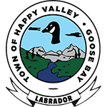
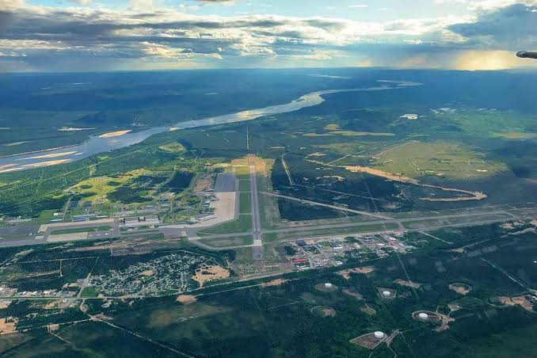
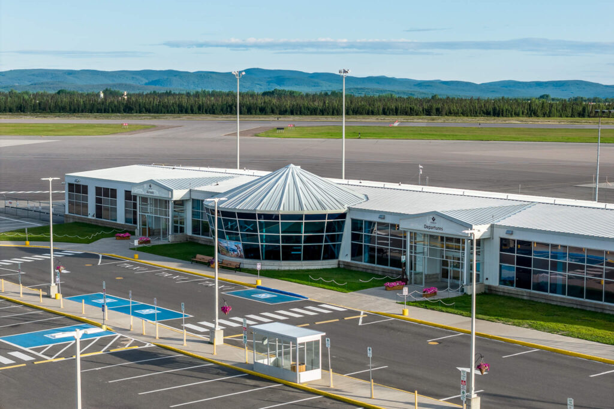
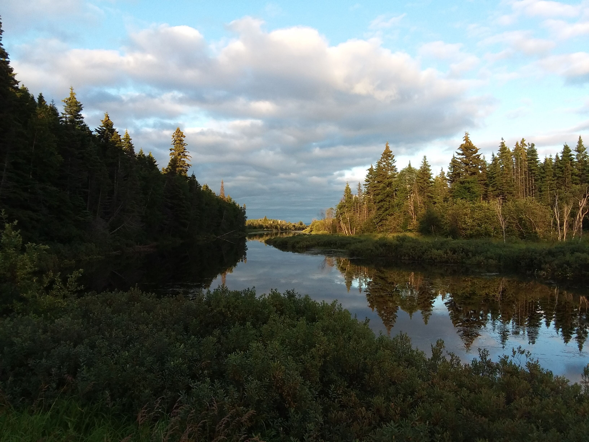

Bienvenue sur Tourismo
Toutes les informations sur les vies à vie des destinations sont liés à la destination mensuelle.
Notre sélection ce mois ci : Happy-Valley, Goose-Bay, Canada.

Il s'agit d'une ville canadienne, centre urbain de la région du Labrador. Incorporée en 1973, la municipalité intègre l'ancienne ville de Happy Valley et le district de Goose Bay.Happy Valley-Goose Bay se trouve à l'extrémité sud-ouest du lac Melville près de l'embouchure du fleuve Churchill. Les origines de la villes remontes en 1941, lorsque l'armée y établie un aéroport militaire pour soutenir les opérations de la Seconde Guerre mondiale. La ville est aujourd'hui un centre administratif et commercial pour le Labrador, ainsi qu'une base militaire importante.
L'aéroport, construit à la hâte en 1941 a été la base aérienne la plus fréquentée du monde à cette époque. Ses pistes géantes (conçues pour les bombardiers longues distances) sont si longues qu'elles ont servi de site d'atterrissage d'urgence officiel pour les navettes spatiales de la NASA.
Le paysage autour de Happy Valley-Goose Bay est typique du subarctique canadien.
La ville est bâtie sur un grand plateau sablonneux, entourée par la majestueuse forêt boréale de sapins et d'épinettes, et bordée par la vaste étendue d'eau salée du lac Melville et le majestueux fleuve Churchill.


